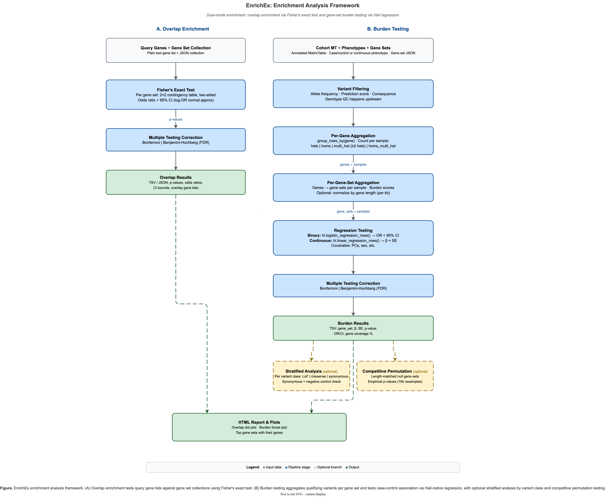

EnrichEx: gene-set enrichment and burden testing¶
EnrichEx tests a collection of gene sets (cell-type markers, pathways, disease panels) in two ways:
- Overlap (
hvantk enrichex overlap): is a gene list, such as GWAS hits or differentially expressed genes, over- or under-represented in each gene set relative to a background universe? One Fisher's exact test per gene set. No Hail needed. - Burden (
hvantk enrichex burden): in a cohort MatrixTable, is a sample's count of genes in the set that carry a qualifying variant associated with a binary or continuous phenotype? One Hail logistic or linear regression per gene set, with optional variant-class strata and a competitive permutation test.hvantk enrichex burden-pipelineruns the same test over several gene-set collections and variant classes in one pass.

Figure 1. (A) Overlap enrichment with Fisher's exact test. (B) Burden testing with Hail regression, with optional variant-class strata and a competitive permutation test.
Inputs¶
Query gene list¶
Used by overlap. Plain text, one gene per line. Blank lines and lines starting with #
are skipped, surrounding whitespace is stripped and duplicates collapse. Matching against
the gene sets and the background is exact and case-sensitive, so use one identifier type
(symbols or Ensembl IDs) everywhere.
Gene-set collection (JSON)¶
Used by all three commands:
{
"gene_sets": {
"Microglia": {
"name": "Microglia",
"genes": ["TREM2", "CD33", "MS4A6A", "TYROBP"],
"source": "Lake et al. 2018",
"metadata": {"tissue": "brain"}
},
"Astrocytes": {"name": "Astrocytes", "genes": ["GFAP", "AQP4", "S100B"]}
},
"background_genes": ["TREM2", "CD33", "MS4A6A", "TYROBP", "GFAP", "AQP4", "S100B", "..."],
"source_description": "Brain cell-type markers",
"metadata": {}
}
- Each set needs
nameandgenes;sourceandmetadataare optional. Results are labelled with each set'snamefield. background_genesis the universe foroverlap, andoverlapneeds it: without it (or with an empty list) the command logs "No query genes found in background universe!" and writes no output.burdenignores the background.- The counts that
GeneSetCollection.save()adds (n_genes,n_gene_sets,n_background) are ignored when the file is read.
Build the file with the hvantk genesets commands (ClinGen, GenCC, COSMIC, or your own
two-column TSV through hvantk genesets prepare; see Gene sets) or from
Python (see Python API). The CLI reads JSON only: convert a GMT file with
GeneSetCollection.load_gmt("sets.gmt").save("sets.json").
Choose the overlap background deliberately
hvantk genesets clingen, gencc, cosmic and prepare (without --background),
and the Python helpers load_gene_sets_from_dict(), load_marker_genes() and
GeneSetCollection.load_gmt(), set the background to the union of the genes in the
sets. With that background, query genes outside every set drop out of the test, and
the test asks how the query is distributed among the sets rather than whether it is
enriched genome-wide. For the genome-wide question, use the universe the query was
drawn from (for example all protein-coding genes, or every gene tested in the GWAS):
pass it to hvantk genesets prepare with --background.
Cohort MatrixTable¶
Used by burden and burden-pipeline: one row per variant, one column per sample.
| Field | Where | Default name (option) | Requirement |
|---|---|---|---|
| Gene | row | SYMBOL (--gene-field) |
Top-level string field, one gene per row, same identifiers as the gene-set JSON. Rows with a missing gene are dropped. |
| Allele frequency | row | gnomad_af (--af-field) |
Numeric. Read only when an AF threshold is set. |
| Prediction score | row | cadd_phred (--score-field) |
Numeric, such as CADD PHRED or REVEL. Read only when --min-score is set. |
| Consequence | row | consequence (--consequence-field) |
One string per row (for example the most severe consequence), matched exactly. Read only when consequences or variant classes are set. |
filters |
row | Set of strings. Read only by burden-pipeline --pass-only, which skips the check when the field is absent. |
|
GT |
entry | Genotype call. |
The AF, score and consequence options accept dot paths into structs (vep.CADD_PHRED);
the gene field does not.
EnrichEx assumes a QC'd MatrixTable. It applies no genotype (GQ, DP), sample or variant
QC of its own. Do that upstream: hvantk hgc filter-qc covers sample and variant QC
(see HGC), and genotype filters are one Hail call:
Filtered genotypes and no-calls count as non-carriers.
Phenotype table¶
- A Hail Table (a path ending in
.ht) keyed by sample ID, or a TSV (any other path), read with type imputation and keyed by--sample-id-field(defaultsample_id). - The key must match the MatrixTable column key in value and type. In a TSV, numeric-looking IDs are imputed as integers; if the MatrixTable keys samples by string, write the phenotypes to a Hail Table with a string key first.
- Binary phenotype: boolean, or 0/1. Continuous phenotype: numeric. Covariates: numeric or boolean, so code a categorical covariate such as sex as 0/1.
- MatrixTable samples without a phenotype value are dropped. Hail's regression also excludes samples with any missing covariate.
burden-pipeline can read the phenotype and covariates from MatrixTable column fields
instead (omit -p).
Overlap enrichment¶
How the overlap test works¶
For each gene set S, with query list Q and background U:
- Q and S are intersected with U.
n_query= |Q ∩ U|,n_gene_set= |S ∩ U|,n_background= |U|. A set with no genes in U is skipped; if no query gene is in U, nothing is tested. -
The 2×2 table is
In the set Not in the set In the query a = n_overlapb = n_query− aNot in the query c = n_gene_set− ad = n_background−n_query−n_gene_set+ a -
A two-sided Fisher's exact test (
scipy.stats.fisher_exact) givesp_value. A small p-value means over- or under-representation; read the direction from the odds ratio. odds_ratiois the sample odds ratio ad/(bc): 0 when a = 0, infinite when b or c is 0.- The 95% confidence interval uses Woolf's log method, exp(ln OR ± 1.96 √(1/a + 1/b + 1/c + 1/d)), when all four cells are above zero, and is reported as [0, inf] otherwise.
p_adjustedapplies Benjamini-Hochberg (default), Bonferroni or no correction across the gene sets actually tested.significantisp_adjusted < --alpha.
Run overlap¶
mkdir -p results
hvantk enrichex overlap \
-g gwas_genes.txt \
-s brain_cell_types.json \
-o results/overlap.tsv \
--generate-report
| Option | Default | Description |
|---|---|---|
-g, --gene-list |
required | Query gene list file. |
-s, --gene-sets |
required | Gene-set collection JSON with background_genes. |
-o, --output |
required | Output path (see below). |
--correction |
benjamini-hochberg |
bonferroni, benjamini-hochberg or none. |
--alpha |
0.05 |
Threshold for significant and the console summary. |
--output-format |
tsv |
tsv, json or both. |
--generate-report |
off | Write a dot plot and an HTML report (see Reports and plots). |
Overlap output¶
tsvwrites the table to-o, adding.tsvif missing;jsonwrites to-o, adding.jsonif missing. Forboth, give-owithout an extension:-o results/overlapwritesresults/overlap.tsvandresults/overlap.json. The directory that holds these files (-o's parent) is created if it does not exist yet.- With
--generate-report, the report and its plot are written next to-o, in that same directory. The report always reads a TSV: when--output-formatwrote one this run, it is reused; otherwise (jsononly) a copy namedoverlap_results.tsvis written there for the report to read. Both are refreshed on every run, so rerunning into the same-onever reports a previous run's results. - When nothing can be tested, the command prints "No results generated" and writes no file.
One row per tested gene set, sorted by p_value:
| Column | Meaning |
|---|---|
gene_set_name |
The set's name. |
n_query |
Query genes in the background (the same on every row). |
n_gene_set |
Set genes in the background. |
n_overlap |
Genes in both (a). |
n_background |
Background size. |
p_value |
Two-sided Fisher's exact p-value. |
odds_ratio |
ad/(bc). |
ci_lower, ci_upper |
95% CI (Woolf); 0 and inf when a cell is zero. |
overlap_genes |
Overlapping genes, sorted, comma-separated. |
p_adjusted |
Corrected p-value. |
significant |
p_adjusted < --alpha. |
The JSON output is an array of the same records; overlap_genes stays a comma-separated
string and an infinite ci_upper becomes null.
Burden testing¶
How the burden test works¶
-
Select qualifying variants. With no filter option, every variant in the MatrixTable counts. Each filter you set keeps a row only when its condition holds:
- allele frequency ≤
--max-af(no AF filter when unset or 1.0 or more); - score ≥
--min-score(no score filter when unset, or 0 or less); - consequence in
--consequences.
A row with a missing value for an active filter is dropped. With
--max-af, for example, variants that have no gnomAD AF are excluded; fill the field with 0 upstream to keep them. If a filter's field does not exist, that filter is skipped and only a log warning says so. - allele frequency ≤
-
Decide, per gene and sample, whether the sample qualifies (
--genotype-aggregation):Model The sample qualifies for a gene when it has hets(default)≥ 1 heterozygous qualifying genotype. Homozygous-alternate genotypes do not count. homs≥ 1 homozygous-alternate qualifying genotype. multi_het≥ 2 heterozygous qualifying genotypes. Genotypes are unphased, so two variants in cis also count; this approximates compound heterozygosity. homs_multi_hetEither of the two above (a recessive model). -
Sum per gene set. A sample's burden for a set is the number of genes in the set for which it qualifies. With
--normalize-by-length, each qualifying gene adds 1/L instead of 1, where L is the gene length in kb from--gene-lengths(genes missing from that file use L = 1) or, without the file, the number of qualifying variant sites in the gene. -
Regress the phenotype on burden, one model per gene set, over the samples with a phenotype:
- binary (
--phenotype-type binary): logistic regression with a Wald test (hl.logistic_regression_rows, at most 25 iterations), logit P(case) = β₀ + β·burden + Σ γₖ·covariateₖ.odds_ratio= exp(β), with 95% CI exp(β ± 1.96 SE); - continuous: linear regression with a t-test (
hl.linear_regression_rows), y = β₀ + β·burden + Σ γₖ·covariateₖ + ε.
This is a self-contained test: the null hypothesis is that burden in the set is not associated with the phenotype.
- binary (
Before the regression, gene sets that list fewer genes than --min-gene-set-size are
dropped, and so are sets with fewer carriers (samples with burden above zero) than
--min-carriers. A set in which no gene has a qualifying variant never reaches the
regression and is absent from the output.
p_adjusted applies --correction with m equal to the number of gene sets in the JSON,
including the sets dropped above (like R's p.adjust(p, n = m)), so pre-filtering does
not lower the penalty. significant is p_adjusted < --alpha. A gene set whose
regression does not converge keeps a missing p_value, is left out of the correction,
and gets p_adjusted = NaN and significant = false.
Variant classes¶
--variant-classes repeats the whole test once per class, each with its own consequence
filter. --consequences is then ignored; --max-af, --min-score and the field options
apply to every class. The presets use VEP Sequence Ontology terms:
| Class | Qualifying consequences | Score filter |
|---|---|---|
lof |
stop_gained, frameshift_variant, splice_donor_variant, splice_acceptor_variant |
--min-score when set |
missense_constrained |
missense_variant |
Always score ≥ 25, whatever --min-score says |
synonymous |
synonymous_variant |
--min-score when set |
Any other name is a custom class whose only qualifying consequence is the name itself,
for a precomputed grouping field: --variant-classes hcLOF,missC,syn --consequence-field csq_group.
Each class is corrected on its own (m = gene sets in the JSON), not across classes. The synonymous class is a negative control: when any gene set reaches nominal p < 0.05 for synonymous variants, a warning is logged, because that points to confounding (gene length, batch, ancestry) rather than biology.
Competitive permutation test¶
A self-contained test can flag many sets at once when cases carry more rare variants
overall, for example after a batch or ancestry difference. --permutation
(--competitive in burden-pipeline) adds a test whose null hypothesis is that the set
is no more associated than a random set of the same size:
- Per-gene qualifying indicators, with the same filter and model as the main test, are computed in Hail for every gene in the MatrixTable and collected to the driver.
- The observed statistic is the Wald z (binary, refitted in NumPy with the same covariates) or the t statistic (continuous) of the set's burden.
- Each permutation draws a random set with as many genes as the set has in the MatrixTable. Draws are length-matched: genes are binned into up to 10 quantile bins of their carrier count, and each set gene is replaced by a random gene from its bin (with replacement). With fewer than 10 genes in the MatrixTable, draws are uniform.
- The empirical p-value is (1 + the number of permutations whose absolute statistic is
at least the observed one) / (N + 1), a two-sided test. With
--variant-classesthe test runs once per class.
The smallest attainable p-value is 1/(N + 1), so choose --n-permutations large enough
to pass your multiple-testing threshold. Empirical p-values are not corrected for
multiple testing, --min-carriers and --min-gene-set-size do not apply, and run time
grows with gene sets × permutations.
Run burden¶
hvantk enrichex burden \
-m cohort.mt \
-p phenotypes.ht \
-s gene_sets.json \
--covariates PC1,PC2,PC3,PC4,PC5,age,sex \
--max-af 0.001 \
--consequences stop_gained,frameshift_variant,splice_donor_variant,splice_acceptor_variant \
--min-carriers 5 \
-o results/burden/
Stratified by variant class, with the competitive test and a report, and phenotypes from a TSV:
hvantk enrichex burden \
-m cohort.mt \
-p phenotypes.tsv \
--sample-id-field sample_id \
-s gene_sets.json \
--covariates PC1,PC2,PC3,sex \
--max-af 0.001 \
--variant-classes lof,missense_constrained,synonymous \
--permutation \
--permutation-seed 42 \
--generate-report \
-o results/burden_by_class/
A quantitative trait uses linear regression:
hvantk enrichex burden \
-m cohort.mt \
-p phenotypes.ht \
-s gene_sets.json \
--phenotype-type continuous \
--phenotype-field ldl \
--covariates PC1,PC2,PC3,age,sex \
--max-af 0.001 \
-o results/burden_ldl/
| Option | Default | Description |
|---|---|---|
-m, --cohort-mt |
required | Cohort MatrixTable. |
-p, --phenotypes |
required | Phenotype .ht, or a TSV. |
-s, --gene-sets |
required | Gene-set collection JSON. |
-o, --output |
required | A directory, created if needed, that receives burden_results.tsv; or a results .tsv path, whose directory is created if needed. |
--phenotype-field |
is_case |
Phenotype field. |
--phenotype-type |
binary |
binary (logistic) or continuous (linear). |
--covariates |
none | Comma-separated covariate fields, no spaces. |
--genotype-aggregation |
hets |
hets, homs, multi_het or homs_multi_het. |
--max-af |
none | Keep variants with AF ≤ this value. |
--min-score |
none | Keep variants with score ≥ this value; 0 or less disables it. |
--consequences |
none | Comma-separated qualifying consequences, no spaces. Ignored with --variant-classes. |
--gene-field |
SYMBOL |
Row field holding the gene. |
--af-field |
gnomad_af |
Row field holding the allele frequency. |
--score-field |
cadd_phred |
Row field holding the prediction score. |
--consequence-field |
consequence |
Row field holding the consequence. |
--correction |
benjamini-hochberg |
bonferroni, benjamini-hochberg or none. |
--alpha |
0.05 |
Threshold for significant. |
--sample-id-field |
sample_id |
Sample ID column of a TSV phenotype file. |
--variant-classes |
none | Comma-separated variant classes (see above). |
--permutation |
off | Add the competitive permutation test. |
--n-permutations |
10000 |
Permutations per gene set. |
--permutation-seed |
none | Random seed for the permutations. |
--normalize-by-length |
off | Length-normalised burden (see step 3). |
--gene-lengths |
none | TSV with a header row: gene in the first column, length in bp in the second. |
--min-carriers |
0 |
Drop gene sets with fewer carriers. |
--min-gene-set-size |
0 |
Drop gene sets that list fewer genes. |
--dry-run |
off | Print the inputs and settings, then exit without reading the data. |
--generate-report |
off | Write a forest plot and an HTML report. |
Burden output¶
Files go to the directory of -o when it ends in .tsv, otherwise to -o itself:
| File | Written |
|---|---|
The -o file, or burden_results.tsv |
Always; all classes together with --variant-classes. |
burden_<class>.tsv |
Per class, with --variant-classes. |
permutation_results.tsv, or permutation_<class>.tsv per class |
With --permutation. |
enrichex_burden.png, enrichex_burden_report.html |
With --generate-report. |
When no gene set is testable, the command writes an empty results file and stops there: no permutation test, no report.
The results table has one row per tested gene set, sorted by p_value:
| Column | Phenotype | Meaning |
|---|---|---|
gene_set_name |
both | The set's name. |
gene_set_size |
both | Genes listed in the set. |
n_genes_found |
both | Set genes with at least one qualifying variant in the MatrixTable. |
gene_coverage_pct |
both | n_genes_found / gene_set_size × 100, one decimal. A warning is logged for sets below 50%. |
beta, standard_error, p_value |
both | Effect of one unit of burden, its SE and p-value. |
z_stat |
binary | Wald z statistic. |
fit.n_iterations, fit.converged, fit.exploded |
binary | Logistic fit diagnostics. When the fit does not converge, the statistics are missing. |
odds_ratio, ci_lower, ci_upper |
binary | exp(β) and its 95% CI. |
n, sum_x, y_transpose_x |
continuous | Samples used, sum of burden, and Σ y·burden. |
t_stat |
continuous | t statistic. |
p_adjusted, significant |
both | Corrected p-value, and p_adjusted < --alpha. |
variant_class |
both | With --variant-classes. |
The permutation tables have gene_set_name, n_genes_tested (set genes present in the
MatrixTable), observed_statistic, empirical_p_value, n_permutations and
n_exceeded, plus variant_class per class.
Burden pipeline¶
hvantk enrichex burden-pipeline loads the cohort once and runs the burden test for every
pair of gene-set collection and variant class. The statistics are those of burden;
inputs, defaults and outputs differ.
hvantk enrichex burden-pipeline \
-m cohort.mt \
-p phenotypes.ht \
--gene-sets heart:gene_sets/heart.json \
--gene-sets brain:gene_sets/brain.json \
--variant-classes lof,missense_constrained,synonymous \
--max-af 0.001 \
--covariates PC1,PC2,PC3,sex \
--competitive \
--generate-report \
-o results/celltype_burden/
With the phenotype and covariates stored as MatrixTable column fields, omit -p and use
dot paths; the leaf names (is_case, PC1, ...) are used for the regression:
hvantk enrichex burden-pipeline \
-m cohort.mt \
--gene-sets heart:gene_sets/heart.json \
--phenotype-field phe.is_case \
--covariates phe.PC1,phe.PC2,phe.sex \
--variant-classes lof,synonymous \
-o results/burden/
--max-af, --min-score, --pass-only and the three field options always apply, with
or without --variant-classes: without it, the pipeline still makes one unstratified
run per collection, named all, using those filters.
Where it differs from burden:
| Option | burden-pipeline |
burden |
|---|---|---|
| Gene sets | --gene-sets NAME:PATH, repeatable, required, no short flag |
-s PATH, one file |
-p, --phenotypes |
Optional; when omitted, read from MatrixTable column fields | Required |
-o |
--output-dir, a directory |
--output, a file or a directory |
--min-carriers |
5 |
0 |
--max-af |
0.01 |
none |
--min-score |
Applied as given; leave it unset to disable | 0 or less disables it |
--pass-only / --no-pass-only |
--no-pass-only; --pass-only keeps rows whose filters set is empty |
Not available |
| Permutation test | --competitive |
--permutation |
--consequences |
Not available; use --variant-classes |
Available |
The remaining options (--phenotype-field, --phenotype-type, --covariates,
--gene-field, --genotype-aggregation, --correction, --alpha,
--min-gene-set-size, --n-permutations, --permutation-seed, --normalize-by-length,
--gene-lengths, --af-field, --score-field, --consequence-field,
--sample-id-field, --dry-run, --generate-report) behave as in burden, except that
--covariates tolerates spaces after commas. --dry-run prints the run plan without
starting Hail or writing anything to disk, in both commands (it still checks that the
input paths exist).
Each run (one collection, one class) is corrected on its own, with m = gene sets in that
collection. A gene set whose regression fails keeps a missing p_adjusted.
results/celltype_burden/
├── burden_combined.tsv # every run, with variant_class and collection columns
├── per_run/
│ ├── burden_<collection>_<class>.tsv # class "all" when unstratified
│ └── permutation_<collection>_<class>.tsv # with --competitive
├── plots/ # created empty
├── enrichex_burden.png # with --generate-report
└── enrichex_burden_report.html # with --generate-report
Reports and plots¶
--generate-report needs matplotlib, from the enrichex extra
(pip install 'hvantk[enrichex]'). The report is one HTML file with the plot embedded;
the PNG is also written next to it.
overlapwritesenrichex_overlap_report.htmlandenrichex_overlap.png: a table of the 20 sets with the smallestp_adjusted, the overlapping genes of each, and a dot plot of those among them with at least one overlapping gene (height −log10p_adjusted, colour odds ratio, sizen_overlap).burdenandburden-pipelinewriteenrichex_burden_report.htmlandenrichex_burden.png: a forest plot of the 25 sets with the smallestp_adjusted(odds ratio or β with 95% CI) and a table.
Each report opens with an overview that counts the rows whose significant column is
true, and ends with a short methods note. The overlap and burden reports also
summarise the gene-set collection.
The same output from Python:
import pandas as pd
from hvantk.algorithms.enrichex import (
generate_report,
plot_burden_forest,
plot_enrichment_dotplot,
)
overlap = pd.read_csv("results/overlap.tsv", sep="\t")
plot_enrichment_dotplot(overlap, output_path="plots/overlap_dotplot.png", top_n=25)
burden = pd.read_csv("results/burden/burden_results.tsv", sep="\t")
plot_burden_forest(
burden, output_path="plots/burden_forest.pdf", format="pdf", phenotype_type="binary"
)
generate_report(
output_path="report/enrichex_report.html",
overlap_results="results/overlap.tsv",
burden_results="results/burden/burden_results.tsv",
gene_sets_path="gene_sets.json",
title="EnrichEx report",
)
Each plot function saves to output_path with the extension replaced by format
(default png) and returns the matplotlib figure. plot_burden_forest needs ci_lower
and ci_upper, which binary results have; for continuous results add
beta ± 1.96 × standard_error yourself and pass sort_by="p_value". The other plots are
plot_enrichment_barplot, plot_burden_volcano, plot_celltype_burden_heatmap (one cell
per gene set and variant class, from burden_combined.tsv) and plot_celltype_forest
(one gene set across variant classes).
Python API¶
Everything below is importable from hvantk.algorithms.enrichex.
Overlap and gene sets¶
Overlap runs on plain Python, without Hail:
from hvantk.algorithms.enrichex import (
GeneSetCollection,
compute_overlap_enrichment_pandas,
)
gene_sets = GeneSetCollection.load("brain_cell_types.json")
query = ["APOE", "CLU", "CR1", "PICALM", "BIN1", "TREM2", "CD33", "MS4A6A"]
df = compute_overlap_enrichment_pandas(
query, gene_sets, correction_method="benjamini-hochberg"
)
print(df.loc[df["significant"], ["gene_set_name", "n_overlap", "odds_ratio", "p_adjusted"]])
compute_overlap_enrichment() takes the same arguments and returns a list of
OverlapResult objects sorted by p_value. Their attributes are the table columns,
with overlap_genes as a list and no significant attribute.
To build a collection:
from hvantk.algorithms.enrichex import load_gene_sets_from_dict
with open("protein_coding_genes.txt") as fh:
background = {line.strip() for line in fh if line.strip()}
collection = load_gene_sets_from_dict(
{"Microglia": ["TREM2", "CD33", "MS4A6A"], "Astrocytes": ["GFAP", "AQP4", "S100B"]},
background_genes=background,
)
collection.save("brain_cell_types.json")
load_marker_genes(path, cluster_column="cluster", gene_column="gene") makes one set per
cluster from a marker TSV, such as Seurat FindAllMarkers output.
GeneSetCollection.load_gmt(path, background_genes=None) reads GMT.
GeneSet(name, genes, source="", metadata={}) and
GeneSetCollection(gene_sets, background_genes, source_description="", metadata={})
build collections by hand; a collection supports len(), iteration over its GeneSet
objects, get(name), names(), save(), save_gmt() and to_dict().
Burden¶
import hail as hl
from hvantk.algorithms.enrichex import (
GeneSetCollection,
VariantFilter,
apply_correction,
run_burden_analysis,
)
from hvantk.core.utils.hail_context import init_hail
init_hail()
mt = hl.read_matrix_table("cohort.mt")
pheno = hl.read_table("phenotypes.ht")
gene_sets = {
gs.name: sorted(gs.genes) for gs in GeneSetCollection.load("gene_sets.json")
}
lof = VariantFilter(
max_af=0.001,
min_score=None,
consequences=["stop_gained", "frameshift_variant"],
pass_only=False,
)
result = run_burden_analysis(
cohort_mt=mt,
gene_sets=gene_sets,
phenotype_ht=pheno,
phenotype_field="is_case",
phenotype_type="binary",
covariate_fields=["PC1", "PC2", "PC3", "age", "sex"],
variant_filter=lof,
genotype_aggregation="hets",
min_carriers=5,
)
if result is not None:
df = result.to_pandas()
df["p_adjusted"] = apply_correction(
df["p_value"].astype(float).tolist(),
method="benjamini-hochberg",
n_total=len(gene_sets),
)
run_burden_analysis()returns the regression table withoutp_adjustedandsignificant(the CLI adds those), orNonewhen nothing is testable.VariantFilter()defaults are stricter than the CLI's:max_af=0.01,min_score=20.0oncadd_phred, andpass_only=True. Passmin_score=Noneandpass_only=Falseto select by consequence and AF only. Itsmin_gqandmin_dpfields are accepted but the burden functions never apply them.apply_correction(p_values, method, n_total=None)takes a list, not a NumPy array.
| Function or class | What it does |
|---|---|
compute_geneset_burden_mt(mt, gene_sets, ...) |
Steps 1 to 3: a MatrixTable with one row per gene set (gene_set_size, n_genes_found, gene_coverage_pct), one column per sample and a burden entry; None when no set gene has a qualifying variant. |
logistic_burden_test(mt_burden, phenotype_field, covariates, pass_through), linear_burden_test(...) |
Step 4 on such a MatrixTable; the phenotype and covariates must already be column fields of mt_burden. |
compute_per_gene_burden_mt(mt, gene_field, variant_filter) |
Per-gene MatrixTable with hets, homs and multi_het entries. |
run_stratified_burden_analysis(..., variant_classes) |
run_burden_analysis per class; returns a dict of class name to table (with variant_class). |
build_variant_classes_from_presets(names, base_filter=None) |
Dict of class name to VariantFilter. Without base_filter: no AF, PASS or score filter, except the fixed score ≥ 25 of missense_constrained. |
permutation_burden_test(..., n_permutations=10000, length_matched=True, seed=None) |
The competitive test; returns a pandas DataFrame. |
BurdenConfig, BurdenPipeline |
The burden-pipeline engine: BurdenPipeline(config).show_plan() and .run(), which returns the combined DataFrame. BurdenConfig.generate_report defaults to True, unlike the CLI flag. |
generate_synthetic_burden_cohort(...) |
A synthetic cohort with planted signal: returns the MatrixTable, a phenotype table with is_case, and the signal gene sets. |
check_type_i_error(p_values, alpha=0.05, tolerance=2.0) |
Calibration check under the null: calibrated is true when the rejection rate lies within [alpha/tolerance, alpha × tolerance] and a Kolmogorov-Smirnov test of uniformity gives p > 0.001. |
Interpreting results¶
- Overlap is two-sided. An odds ratio below 1 with a small p-value is depletion.
- Overlap depends on the background (see the warning under Gene-set collection). Fisher's test also treats genes as exchangeable: it ignores gene length and the genes that sets share. The Woolf interval is approximate and can disagree with the exact p-value at small counts.
- The burden effect is per qualifying gene.
odds_ratio(or β) is the effect of one more gene in the set in which a sample qualifies, or of one unit of the length-normalised rate with--normalize-by-length. An odds ratio of 1.5 means each additional qualifying gene multiplies the odds of being a case by 1.5; it does not mean that cases carry 50% more variants. - Sparse sets. With few carriers or complete separation the logistic fit fails
(
fit.convergedfalse, missing statistics) or gives unstable, wide intervals. Raise--min-carriers, merge small sets or use broader variant classes. - Self-contained and competitive tests answer different questions. A significant self-contained result says the set's burden tracks the phenotype; only the competitive test says the set stands out from random sets. Check the synonymous class: signal there points to confounding.
- Gene length. Long genes collect more qualifying variants, so sets of long genes look
burdened. Use
--normalize-by-length, or rely on the length-matched permutation null. - Missing annotations. Active filters drop variants with a missing value. Check
n_genes_foundandgene_coverage_pctto see how much of each set was testable. - Differential QC. No-calls count as non-carriers, so a call-rate difference between cases and controls biases burden. Joint-call and QC cases and controls together, and include ancestry principal components among the covariates.
- Many strata. Variant classes and collections are corrected separately. When you test several, account for the total number of tests when you report.
See also¶
- Gene sets: build the gene-set JSON (
hvantk genesets prepare, ClinGen, GenCC and COSMIC sets). - HGC: joint calling and sample and variant QC before burden testing.
- Ancestry inference: principal components to use as covariates.
- External cohorts: a per-gene Fisher's exact burden test on a case-control
MatrixTable (
hvantk cohort burden). - EnrichEx examples and the scripts in
examples/enrichex/. - Running on HPC: Spark settings for large cohorts.